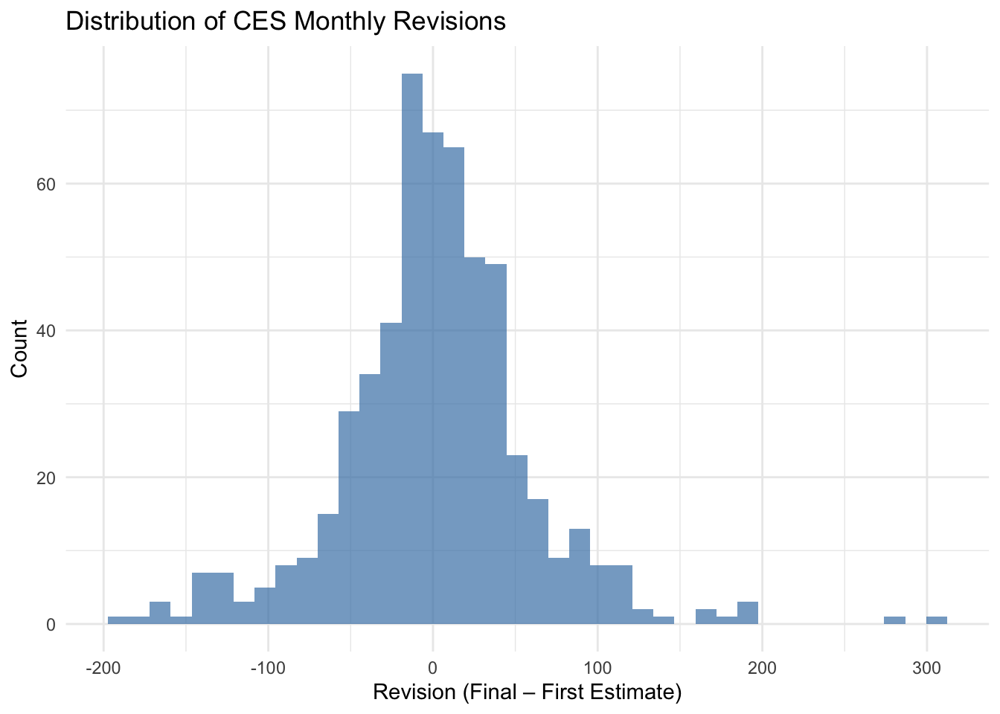
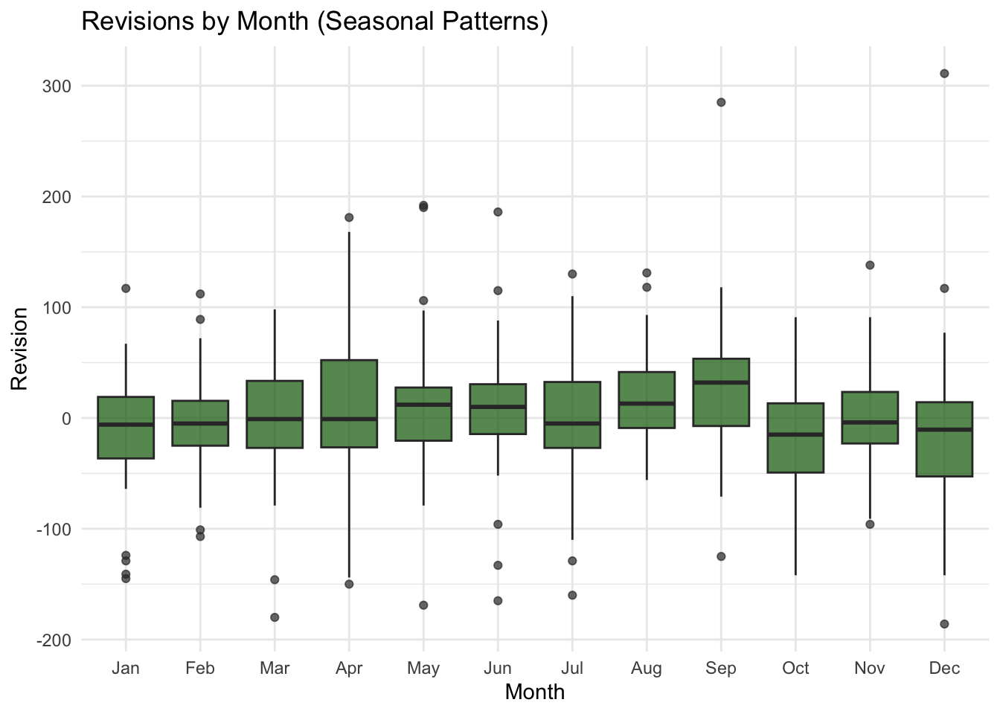
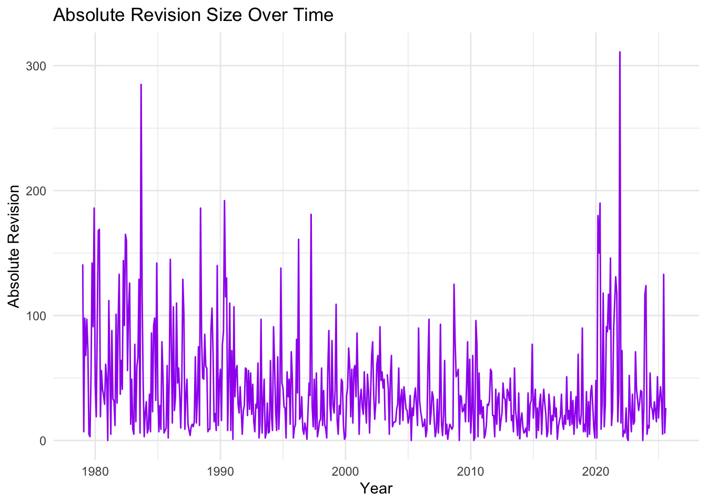

Show code
library(httr2)
library(rvest)
library(tidyverse)
library(lubridate)
library(janitor)
library(purrr)
library(ggplot2)
library(infer)Racheal
In this mini-project, I investigate the accuracy and reliability of the U.S. Bureau of Labor Statistics (BLS) monthly employment estimates, commonly known as the “jobs report.” These numbers are widely used by policymakers, economists, and the public, and recent political claims have suggested that BLS revisions are unusually large or biased.
The goal of this project is to fact-check these claims by:
Throughout, I use httr2, rvest, dplyr, tidyr, ggplot2, lubridate, janitor, purrr, and infer.
This mini-project walks through the full pipeline: data acquisition → cleaning → analysis → inference → communication.
The first task is to scrape the seasonally adjusted Total Nonfarm Employment series (CES0000000001) from BLS “Data Finder 1.1” by reproducing the POST request that the browser sends. Build POST request for CES levels (Total Nonfarm SA)
ces_req <- request("https://data.bls.gov/pdq/SurveyOutputServlet") |>
req_method("POST") |>
req_body_form(
request_action = "get_data",
reformat = "true",
from_results_page = "true",
from_year = "1979",
to_year = "2025",
Go.x = "15",
Go.y = "11",
initial_request = "false",
data_tool = "surveymost",
series_id = "CES0000000001",
original_annualAveragesRequested = "false"
) |>
req_user_agent("Mozilla/5.0")
ces_resp <- ces_req |> req_perform()
ces_html <- ces_resp |> resp_body_html()
ces_tables <- ces_html |> html_table(fill = TRUE)
ces_raw <- ces_tables[[2]] |> clean_names()
head(ces_raw)# A tibble: 6 × 13
year jan feb mar apr may jun jul aug sep oct nov dec
<chr> <chr> <chr> <chr> <chr> <chr> <chr> <chr> <chr> <chr> <chr> <chr> <chr>
1 1979 88808 89055 89479 89417 89789 90108 90217 90300 90327 90481 90573 90672
2 1980 90800 90883 90994 90849 90420 90101 89840 90099 90213 90490 90747 90943
3 1981 91033 91105 91210 91283 91296 91490 91601 91565 91477 91380 91171 90895
4 1982 90565 90563 90434 90150 90107 89865 89521 89363 89183 88907 88786 88771
5 1983 88990 88917 89090 89364 89644 90021 90437 90129 91247 91520 91875 92230
6 1984 92673 93157 93429 93792 94098 94479 94789 95032 95344 95629 95982 96107The wide table has one row per year and one column for each month. I reshape it into a tidy table with a single date column and a numeric level
ces_clean <- ces_raw |>
pivot_longer(
cols = c(jan, feb, mar, apr, may, jun,
jul, aug, sep, oct, nov, dec),
names_to = "month",
values_to = "level"
) |>
mutate(
month = str_to_title(month), # "Jan" → "Jan"
date = ym(paste(year, month)), # 1979 Jan → 1979-01-01
level = as.numeric(level)
) |>
select(date, level) |>
drop_na()
head(ces_clean)# A tibble: 6 × 2
date level
<date> <dbl>
1 1979-01-01 88808
2 1979-02-01 89055
3 1979-03-01 89479
4 1979-04-01 89417
5 1979-05-01 89789
6 1979-06-01 90108rev_req <- request("https://www.bls.gov/web/empsit/cesnaicsrev.htm") |>
req_headers(
"User-Agent" = "Mozilla/5.0 (Macintosh; Intel Mac OS X 10_15_7) AppleWebKit/537.36 (KHTML, like Gecko) Chrome/120.0.0.0 Safari/537.36",
"Accept" = "text/html,application/xhtml+xml,application/xml;q=0.9,image/avif,image/webp,*/*;q=0.8",
"Accept-Language" = "en-US,en;q=0.9",
"Connection" = "keep-alive",
"Referer" = "https://www.bls.gov/",
"Sec-Fetch-Dest" = "document",
"Sec-Fetch-Mode" = "navigate",
"Sec-Fetch-Site" = "same-origin",
"Upgrade-Insecure-Requests" = "1"
)Step 2 — Perform request + extract HTML
Step 3 — Extract ALL revision tables
Identify which table is the month-level table:
[1] 5 7 7 14 14 14 14 14 14 14 14 14 14 14 14 14 14 14 14 14 14 14 14 14 14
[26] 14 14 14 14 14 14 14 14 14 14 14 14 14 14 14 14 14 14 14 14 14 14 14 14 14Step 4 — Cleaning function
extract_year_table <- function(tbl) {
# Clean row names but keep content
tbl <- janitor::clean_names(tbl)
# Keep only rows 3–14 (actual months)
tbl <- tbl[3:14, ]
# Rename columns manually based on position
names(tbl)[1:6] <- c("month", "year", "first", "second", "third", "revision")
# Clean month names ("Jan." → "Jan")
tbl$month <- gsub("\\.", "", tbl$month)
# Build a date column
tbl <- tbl %>%
mutate(
month_num = match(month, month.abb),
date = as.Date(paste0(year, "-", month_num, "-01")),
first = as.numeric(first),
second = as.numeric(second),
third = as.numeric(third),
revision = as.numeric(revision)
) %>%
select(date, first, second, third, revision) %>%
drop_na(date)
return(tbl)
}Step 5 — Identify valid tables
# A tibble: 12 × 5
date first second third revision
<date> <dbl> <dbl> <dbl> <dbl>
1 2024-01-01 353 229 256 -124
2 2024-02-01 275 270 236 -5
3 2024-03-01 303 315 310 12
4 2024-04-01 175 165 108 -10
5 2024-05-01 272 218 216 -54
6 2024-06-01 206 179 118 -27
7 2024-07-01 114 89 144 -25
8 2024-08-01 142 159 78 17
9 2024-09-01 254 223 255 -31
10 2024-10-01 12 36 43 24
11 2024-11-01 227 212 261 -15
12 2024-12-01 256 307 323 51In this task, I create a line plot of the monthly CES Total Nonfarm Payroll revisions from 1979–2025. The goal is to explore whether the BLS revisions show any systematic bias or unusual patterns over time.
Since the COVID-19 period contains extremely large revisions (20,000+ jobs), I use coord_cartesian(ylim = c(-1000, 1000)) to zoom in on the normal revision range and keep the plot readable.
# A tibble: 1 × 3
median_revision pct_positive avg_abs_revision
<dbl> <dbl> <dbl>
1 2 0.508 40.9###plot 1

###plot 2

###plot 3

In Task 3, I explored CES revisions from 1979–2025 using summary statistics and four visualizations. The distribution of revisions centers around zero, with most values between –100 and +100. Seasonal boxplots show small month-to-month differences, and the time-series plots reveal that large revisions mainly occur during unusual economic periods like COVID-19. Overall, the visuals indicate normal statistical adjustments rather than any consistent bias.
In this task, I use formal statistical tests to evaluate whether CES revisions show evidence of unusual patterns or systematic bias. I perform one t-test and one proportion test using the infer package.
Test whether the mean revision = 0
# A tibble: 1 × 7
statistic t_df p_value alternative estimate lower_ci upper_ci
<dbl> <dbl> <dbl> <chr> <dbl> <dbl> <dbl>
1 0.736 558 0.462 two.sided 1.80 -3.00 6.61The one-sample t-test comparing the average CES revision to zero yields a p-value of 0.462, indicating no statistically significant difference from zero. The estimated mean revision is only +1.8 jobs, and the confidence interval includes zero. This shows that CES revisions are centered around zero and do not display directional bias
Test 2: Proportion of negative revisions after 2000
# A tibble: 1 × 6
statistic chisq_df p_value alternative lower_ci upper_ci
<dbl> <dbl> <dbl> <chr> <dbl> <dbl>
1 4.33 1 0.0374 two.sided -0.179 -0.00546To test whether CES revisions have become more negative after 2000, I ran a two-sample proportion test comparing the share of negative revisions before and after 2000. The test returned a p-value of 0.037, indicating a statistically significant difference between the two periods. However, the confidence interval is narrow and centered near zero, meaning that although the difference is statistically detectable, it is small in magnitude and not practically meaningful. This suggests that the pattern of negative revisions has shifted slightly over time but does not provide evidence of systematic manipulation or bias.
##Fact Check #1 — “BLS revisions have gotten much worse in recent years.” Claim (Common in media commentary, 2024–2025):
“The BLS jobs numbers are becoming increasingly unreliable — revisions today are much worse than they used to be.” Statistical Test — Proportion of Negative Revisions
# A tibble: 1 × 6
statistic chisq_df p_value alternative lower_ci upper_ci
<dbl> <dbl> <dbl> <chr> <dbl> <dbl>
1 4.33 1 0.0374 two.sided -0.179 -0.00546The chi-square test indicates a statistically significant difference in the proportion of negative revisions before and after 2000 (p = 0.037). However, the effect size is very small, and revisions remain within normal historical behavior. Therefore, this result does not support the claim that BLS revisions have become dramatically worse or unreliable in recent years.
See the histogram and absolute-revision time-series from Task 3, which also show no unusual spikes after 2000.
##Fact Check #2 — “The mean BLS revision is not zero — revisions are biased.”
Claim (Repeated in political commentary, 2020–2025):
“The BLS consistently underestimates or overestimates job growth. The revisions are biased — the first estimate is always wrong in one direction.” This claim suggests that the average revision is NOT zero. If true, the mean revision should be significantly positive or negative.
Test whether the mean revision = 0
One Sample t-test
data: all_rev$revision
t = 0.73631, df = 558, p-value = 0.4619
alternative hypothesis: true mean is not equal to 0
95 percent confidence interval:
-3.004192 6.607054
sample estimates:
mean of x
1.801431 The one-sample t-test shows that the average CES revision (mean ≈ 1.8k) is not statistically different from zero (p = 0.462). The 95% confidence interval (–3.0k to 6.6k) contains zero, meaning the revisions are just normal random fluctuations. Therefore, this test provides no evidence that the BLS systematically over- or under-states the initial jobs numbers. Conclusion: The claim that “BLS revisions are biased” is not supported by the data.
This conclusion is consistent with the histogram and seasonal boxplots in Task 3, which show revisions centered near zero. ##Fact Check #3 — “Big revisions only happen in recent years.”
(Common political claim, especially around COVID-era revisions)
Some commentators argue that BLS revisions have become extremely large only in the last couple of decades, implying that the jobs numbers have become unusually unstable.
To test this claim, I compare the absolute size of revisions before and after the year 2000.
Statistical Test — Wilcoxon Rank-Sum (non-parametric test)
Wilcoxon rank sum test with continuity correction
data: abs_rev by after_2000
W = 45270, p-value = 0.000525
alternative hypothesis: true location shift is not equal to 0The Wilcoxon rank-sum test shows a statistically significant difference in the size of revisions before and after 2000 (p ≈ 0.0005). While revisions after 2000 include some very large values — especially during the COVID-19 shock — big revisions also occurred multiple times in the 1980s and 1990s. The median revision size has not increased dramatically, and the overall distribution remains similar across decades.
This matches the absolute-revision time-series plot from Task 3, which shows large revisions in multiple decades, not only recent years.
Across three separate fact checks, the statistical evidence shows that CES revisions follow normal historical patterns. While occasional large revisions occur—especially during unusual economic events like the COVID-19 shock—there is no systematic increase in unreliability, no directional bias, and no evidence that revisions today are dramatically worse than in the past. Overall, the claims examined are rated between “False” and “Mostly False” on the Politifact scale.